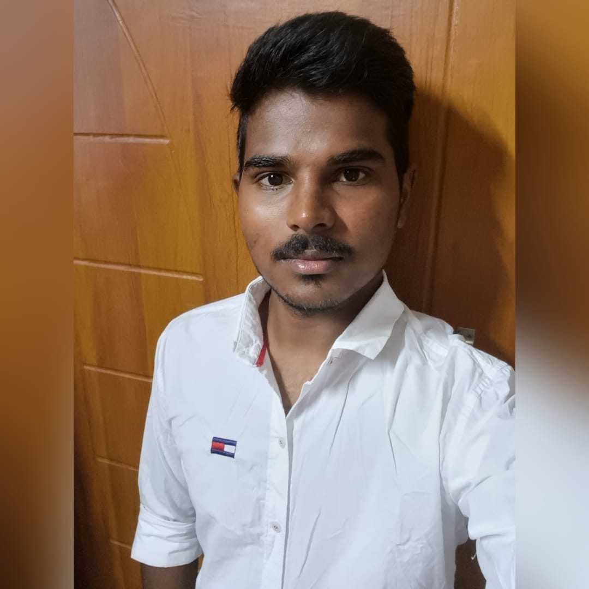
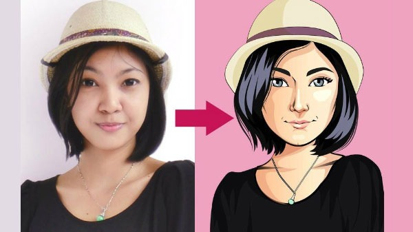

Vinith Reddy Chaduvu
Machine learning engineer
Aspiring MS in AI candidate at Yeshiva University with hands-on experience at Accenture, including client work for Vodafone, Proficient in Python, SQL, and R, eager to innovate and solve real-world challenges.Projects
Posture detection using machine learning
The Yoga Pose Detection Web Application is a user-friendly tool that leverages Flask, Mediapipe, and machine learning to detect yoga poses in real-time. Whether you're a yoga enthusiast or practitioner, this application offers a convenient way to receive immediate feedback on your yoga poses.
Super Mario using Reinforcement learning

In the "Reinforcement Learning for Super Mario AI" project, I employed Deep Q-Networks (DQNs) to train an AI agent for autonomous navigation in the Super Mario game. Using Python and Pygame, the agent learned to make optimal decisions by modeling a state-action-reward framework, showcasing the application of reinforcement learning in enhancing gaming performance.
Cartoonify and Pencil Sketch Image Converter
The Cartoonify and Pencil Sketch Image Converter is a web-based tool designed to transform ordinary images into captivating cartoon and pencil sketch versions. Developed using Flask, a Python web framework, and powered by OpenCV for image processing, the project offers a user-friendly interface for effortless image conversion.
Ethnic Disparities in Body Weight: NHANES Analysis
Conducted analysis on NHANES dataset to explore ethnic disparities in body weight. Cleaned and analyzed data, performed ANOVA and moderation analysis to assess differences in mean weight across racial groups, considering age as a factor. Produced descriptive statistics and visualizations, identifying potential disparities. Results aimed to guide targeted interventions for addressing health inequalities
Experience
Packaged App Development Associate
Accenture, Bangalore, India
Oct 2022 - Oct 2023
As a Packaged App Development Associate at Accenture, I led AI initiatives optimizing Vodafone apps with SQL, Python, and NLTK, driving improved performance. Developed key features like sentiment analysis tools and chatbots, boosting user engagement. Successfully addressed challenges in system performance and data privacy, ensuring project success. Implemented optimizations for enhanced application responsiveness and user satisfaction from October 2022 to October 2023.
Skills
- Programming Languages: Proficient in C, Python, R, and SQL, enabling versatile application development and data analysis.
- Operating Systems: Experienced in Windows, Linux, and Mac environments, ensuring adaptability across various platforms.
- Frameworks: Skilled in leveraging Pytorch for deep learning, Flask for web development, and Pyspark for big data processing.
- Data Handling: Adept at data manipulation and analysis using Numpy, Pandas, Matplotlib, and Scikit-learn, ensuring robust data-driven insights.
- Tools: Proficient in version control with Git and containerization with Docker, streamlining collaborative development processes.
Education
Certifications
- Machine Learning Specialization
- Deep Learning Specialization